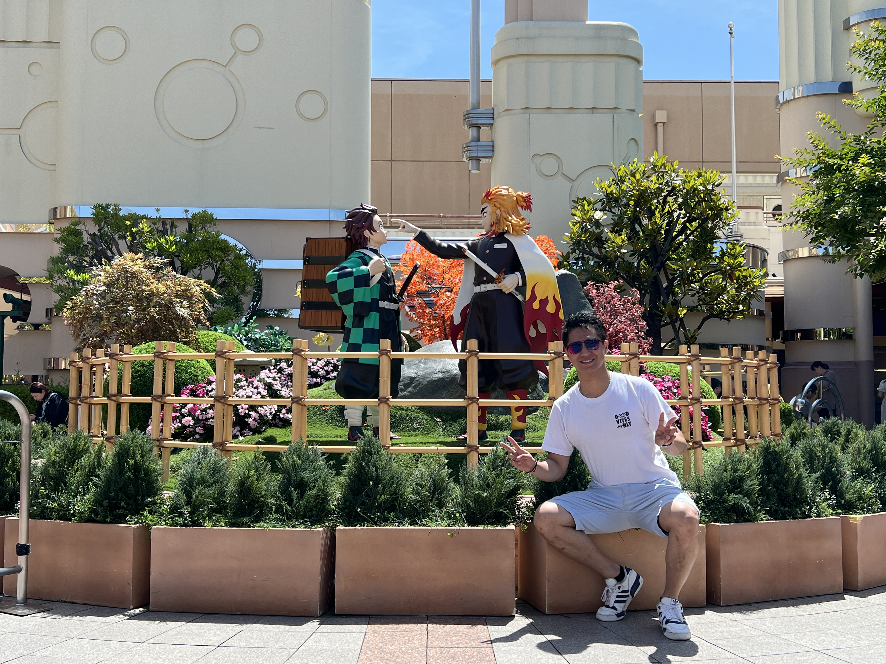
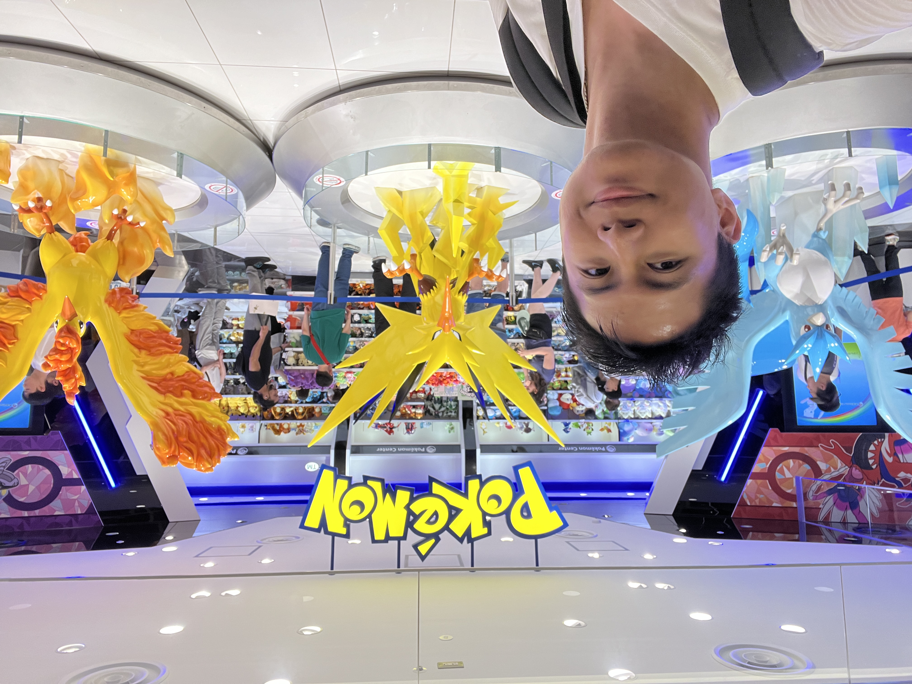

1. Universal Studio
Ce serait un crime d’aller à Osaka sans aller à Universal Studio… Bon, plus sérieusement, c’est un des parcs les plus emblématiques du monde regroupant 10 zones à thème : New York, Minion Park, San Francisco, Jurasic Park, Waterworld, Amity Village, Universal Wonderland, Hollywood, Harry Potter et la zone qui rend cet Universal Studio unique, Super Nintendo World !
En ce qui concerne le prix du billet, il peut fluctuer en fonction de la période, sur ce point je vous recommande vivement d’aller regarder sur leur site pour voir leur calendrier. C’est malheureusement très random les prix d’un billet d’entrée, je vous montre ci-dessous ce que le mois de mai 2024 a donné, je suis parti un 25 mai et par conséquent j’ai dû payer 9400 yens, soit environ 58€. On remarque que les weekends ont tendance à être plus cher, il est plus conseillé d’aller en semaine même s’il peut y avoir des exceptions à certains jours de la semaine…
Seul le Super Nintendo World fait exception à la règle, il faut absolument télécharger l’application Universal Studio Japan (USJ) sur votre téléphone car c’est uniquement et seulement à travers l’application que vous pourrez réserver un créneau d’entrée pour la SNW (Super Nintendo World). De plus, vous ne pourrez réserver qu’uniquement quand vous rentrerez dans le parc sinon l’application ne vous laissera pas réserver votre place car il utilise un système de géolocalisation.
Pour info, nous avons réservé dès que nous sommes entrés à 8h58 mais on avait l’entrée à la SNW à 16h ! Je vous recommande donc de prendre le réflexe de réserver dès que vous entrez dans le parc de directement réserver sur votre application !
Concernant la nourriture, au vu du nombre de personnes qu’il y aura je vous suggère très fortement de ramener votre propre déjeuner/goûter (que vous achèterez au konbini par exemple) car les restaurants là-bas sont plutôt chers et vous gagnerez énormément de temps pour les autres attractions ! Apparemment selon un ami, il faut éviter d’ouvrir vos emballages de nourriture avant d’entrer à USJ (Universal Studio Japan) car les membres du parc vous interdiront l’accès.
2 conseils :
- La première concerne les attractions, vous pouvez voir l’estimation du temps d’attente de chaque attraction sur l’application USJ. Faites très attention à ce que vous choisissez de faire, nous avons fait l’attraction de Demon Slayer personnellement mais pour plus de 3 heures d’attente ! Donc je vous conseille de faire très gaffe concernant les temps d’attente… Vous n’aurez probablement pas le temps de tout faire dans la journée, donc planifiez bien ce que vous allez faire !
- Le deuxième conseil ou plutôt recommandation, afin d’éviter le premier conseil, si vous en avez les moyens financiers bien évidemment, c’est de prendre l’express pass, bien que cela soit très cher, vous n’aurez pas de temps d’attente pour les attractions. Prenons, l’attraction que j’ai faite de Demon Slayer, il y a une autre file indienne dédiée exprès pour ceux qui ont l’express pass… Devinez quoi ? Il n’y a personne car le staff fait entrer les personnes directement dedans ! Si seulement j’étais riche…
Bon, fallait bien que je mette cette photo après mes 3 heures d’attente dans l’attraction de Kimetsu No Yaiba…
Adresse : 2 Chome-1-33 Sakurajima, Konohana Ward, Osaka, 554-0031, Japon
2. Uncle Rikuro cheesecake
Cheesecake super connu de la branche de Rikuro, le gâteau est super moelleux et super bon car il est tout fraîchement sorti de la cuisine, vous pouvez être sûrs de le déguster pendant ses premières minutes de vie après être sorti du four (le pauvre gâteau…).

Bon, la branche a tellement de succès qu’il y a une longue queue, vous allez me dire que c’est normal. Mais tellement de queue qu’il y a une dame qui est là exprès pour vous dire qu’une seule personne par groupe suffit pour faire la queue ! Bonne chance…
Adresse : 3 Chome-2-28 Namba, Chuo Ward, Osaka, 542-0076, Japon
3. Dotonbori
Il y a les Champs Elysées en France et il y a Dotonburi au Japon. C’est un quartier très animé et incontournable d’Osaka, idéal pour faire du shopping ou manger ou manger et manger, n’oubliez pas que vous êtres à Osaka aussi pour ses spécialités culinaires (Tokoyakis, Okonomiyaki, Udon, …)

Pour les vrais touristes, il faut prendre une photo avec Glico man (c’est l’affiche avec l’homme en blanc qui court) ! C’est l’emblème de la ville d’Osaka mais encore et encore une fois, il y a du monde…
Pour trouver l’adresse exacte du Glico man, tapez juste sur Google Maps Dotonburi Glico Sign et vous le trouverez. Personnellement, je trouve que le quartier de Dotonburi possède un charme particulier de nuit et je vous invite à aller le visiter à cette période de la journée !
4. Umeda Sky Building Floating Garden
« J’aimerais bien avoir une belle vue sur Osaka ! » c’est ce que vous vous demandez probablement ? Eh bien voici la Umeda Sky Building ! Une tour emblématique d’Osaka, un incontournable à faire, vous aurez une belle vue en 360 degrés sur le toit de la Umeda Sky. Il y a un étage où vous pourrez manger quelques spécialités au matcha de la tour : le croffle, le sundae, le matcha soda float ou le soft serve ice scream, je vous mets en tout cas la photo du menu que j’ai prise ci-dessous.
Personnellement, j’ai goûté le croffle, il est bon mais je trouve que pour 700 yens, cela n’est pas si délicieux que l’affiche veut nous le faire croire, je vous laisse donc le juger par vous-même.
L’entrée coûte 1500 yens et vous n’aurez pas besoin de réserver votre place à l’avance, vous pourrez le commander directement sur place et vous n’aurez pas beaucoup d’attente pour monter. Choisissez un jour ensoleillé pour aller visiter cette dernière sinon l’entrée ne vaudra pas le coup.
Adresse : Japon, 〒531-6039 Osaka, Kita Ward, Oyodonaka, 1 Chome−1−88 梅田スカイビル
5. Kuromon Ichiba Market

Célèbre rue commerçante où vous pourrez vous promener, faire du shopping et surtout goûter les meilleures spécialités d’Osaka en marchant ! C’est ici qu’on a goûté les tempuras qui sont géantes et qui n’avaient rien à voir avec la France ! C’est également dans ce lieu que nous avons goûté les takoyakis qui sont tout juste succulents et vraiment moins chers qu’en France, il ne faut donc pas louper cette occasion pour apprécier les spécialités locales !
La rue est très animée, un peu dur de se déplacer mais ça en vaut la peine !
Adresse : 2 Chome Nipponbashi, Chuo Ward, Osaka, 542-0073, Japon
6. Chateau d’Osaka
Pour les fans d’histoires ou de châteaux, je vous présente le château d’Osaka qui est l’un des plus beaux châteaux que j’ai vus jusqu’à présent. Or, hormis l’aspect extérieur qui est juste sublime à voir pour nos petits yeux, je trouve qu’il n’y a pas grand-chose à voir à l’intérieur à part le musée d’histoire car je trouve que l’intérieur n’est pas si grand que ça et qu’il y a beaucoup trop de touristes ce qui rend la circulation très compliquée à cause des couloirs qui sont plutôt étroits à mon sens pour un château.
Vous aurez probablement environ une quarantaine de minutes à attendre à l’extérieur pour rentrer dans le château, je vous recommande alors de mettre de la crème solaire si vous partez en été ha ha. Et petite astuce, si vous ne voulez pas attendre davantage pour l’ascenseur je vous recommande très fortement de prendre les escaliers, vous n’aurez pas tellement d’étages à monter et vous perdrez moins de temps ! En plus, si vous ne voulez pas perdre davantage de temps car vous ne restez pas longtemps au Japon, je vous conseille de juste le visiter de l’extérieur (et prendre quelques photos souvenirs si vous voulez).
Adresse : 1-1 Osakajo, Chuo Ward, Osaka, 540-0002, Japon
7. Pokémon center Osaka
Pour tout fans de Pokémon, je pense que vous allez adorer les Pokémon Center qui sont les boutiques officielles de la franchise du même nom. On en trouve dans les principales grandes villes telles que Tokyo, Kyoto ou Osaka (où il y en a deux dans la même ville). Chaque boutique Pokémon center possède leur propre statue de pokémon légendaire, c’est très sympa de les voir, je dis ça en tant que grand fan de Pokémon…
Vous trouverez toutes sortes de goodies en passant bien évidemment par les peluches pokémon, les cartes pokémon ou même quelques figurines et pleins d’autres objets qui peuvent vous servir au quotidien ! Concernant les cartes pokémon, si vous voulez en acheter je vous déconseille d’acheter les booster qui sont en exposition car ils contiennent des cartes pokémon déjà prédéfinies à l’avance. Si vous voulez acheter des vrais boosters avec une part de hasard dedans il faut aller directement à la caisse pour en acheter directement auprès du vendeur.
Adresse : Japon, 〒530-8202 Osaka, Kita Ward, Umeda, 3 Chome−1−1 大丸梅田店 13F
8. Melon Bread
Quoi de mieux que de manger du melon bread avec de la glace à l’intérieur en plein été dans les rues d’Osaka ! Il existe bien évidemment le melon pan classique sans rien dedans à 400 yens puis il y a 4 saveurs différents de melon bread ice cream pour deux prix différents.
Les deux moins chers sont des classiques et sont à 600 yens : vanille et thé vert. Et les deux autres sont à 800 yens, à savoir la fraise et à la fleur de cerisier qui est le plus populaire ! On a personnellement goûté les 4 saveurs avec la famille et en vrai, quel que soi la saveur que vous prenez vous n’allez pas le regretter !
Et voici la superbe adresse : Shibata.Bld, 1 Chome-5-8 Dotonbori, Chuo Ward, Osaka, 542-0071, Japon. Cependant, attendez-vous à ce qu’il y ait beaucoup de queue, il se situe au cœur de Dotonbori !
9. Temple Katsuo-ji
Allez, je le dis, c'est vraiment mon sanctuaire préféré du Japon. Katsujo-ji qui signifie le temple de la victoire, stylé n'est-ce pas ?
Le temple est surtout réputé pour être rempli de milliers de petites statues de Daruma, symbole de persévérance et de victoire ! Mais il est également célèbre pour porter chance et favoriser la réussite, notamment dans les études, les affaires, les concours ou les défis personnels.
Et une activité que j'aime trop là-bas, c'est qu'ils te remettent une petite feuille quand tu achètes ton billet d'entrée que tu dois tamponner dans différents spots du sanctuaire jusqu'à avoir au fur et à mesure à la fin une image complète des darumas de ce sanctuaire qui est absolument magnifique ! De plus, vous aurez également un spot pour prendre des photos gratuitement de vous avec le drapeau de votre pays ou du pays de votre choix, bon, nous on a pris deux drapeaux avec ma soeur et nos parents. L'entrée coûte 500 yens soit environ 3€.
Concernant le transport, ne vous en faites pas, même si le temple parait plutôt excentré d'Osaka, vous prenez les transports normalement jusqu'à Minoh-Kayano et ici vous avez un bus exprès pour vous emmener directement à Katsujo-ji parce que ce bus n'apparaît même pas sur Google Maps. Adresse : 2914-1 Aomatani, Minoh, Osaka 562-8508, Japon